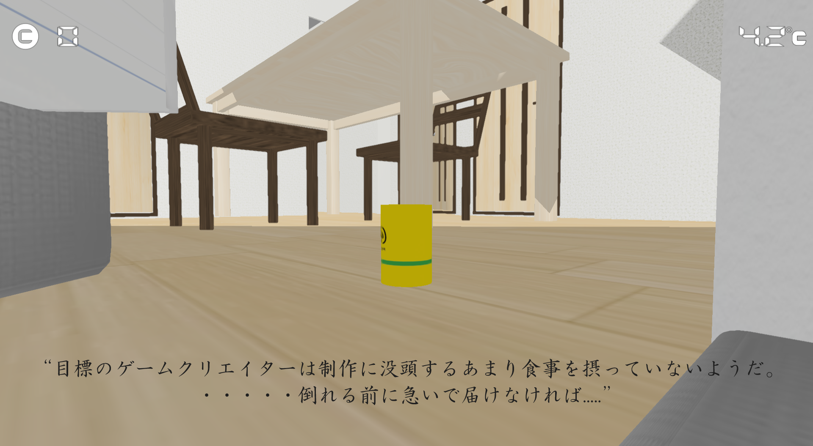

DeliverEnergy


このゲームは、栄養ドリンクを操作して家主の元までたどり着くとゲームクリアになります。
プレイヤーは直立モードと転がりモードを駆使してステージを攻略していきます。


マップ構成はボスと戦うステージとアスレチックを攻略するステージの2種類が一体型となったマップ構成になっています。


とあるゲームをプレイしているときに、ガイド役のキャラクターがサポートしてくれると一緒に冒険している感が出てより楽しむことが出来たので、ゲーム中副音声によるガイドで現在の目的が何かを明確にしつつ、聴覚でも楽しめるようにしました。
敵はゲーム制作中のバグをモチーフにしているので、ボスが登場するときにパソコンからバグが実体化するという演出を作りました。
出現時にボスの色を変えることで、バグが起きている感を表現しました。

『直立モード』と『転がりモード』という2つの状態をステートを使って切り替えるアクションを実装しました。
特に転がり状態では、単純な移動ではなく加速度ベクトルを用いた慣性処理を行い、缶特有の『重み』と『転がり感』を再現しました。また、現在の移動速度をジャンプ力に加算する処理を入れることで、加速を利用して遠くへ飛ぶという挙動を行っています。
コントローラー（左スティック）の入力を、カメラの視点方向（Forward / Rightベクトル）に合わせて変換しています。これにより、カメラがどこを向いていても、プレイヤーが「画面上の見たままの方向」に入力できる直感的な操作を行っています。
プレイヤーの回転制御にはクォータニオン（四元数）を採用しました。『進行方向への旋回』『転倒時の姿勢制御』『移動距離に基づいた自転アニメーション』の3要素を合成し、ジンバルロックを防ぎつつ意図通りの挙動を実装しています。また、状態遷移時にはSlerpを用いた球面線形補間を行い、急激な挙動変化のない滑らかな姿勢変更を実現しました。
敵は、ボス、ボスの眷属、雑魚敵の3種類が存在します。


敵AIの構築にはステートパターンを採用しました。『待機』『移動』『召喚』といった行動を個別のクラスとして実装し、状態遷移の条件を明確に定義することで、複雑なボス戦のフローをバグなく管理しています。これにより、新しい攻撃パターンの追加や仕様変更にも柔軟に対応できる設計となっています。
ゲームの進行を司る中心的な存在であり、自ら攻撃するだけでなく、部下（眷属）を召喚してけしかける「司令塔」としての役割を持っています。
BossIdleState（待機）→ BossMoveState（移動）→ BossCreateFamiliarState（召喚）というサイクルで行動します。BossMoveStateでは、ComputeNextPosition関数を用いて、指定されたY座標の範囲内（BOSS_MIN_Y ～ BOSS_MAX_Y）を浮遊するように往復移動します。m_isRequestCreateFamiliarフラグを立ててEnemyManagerに生成を依頼する形をとっており、オブジェクト間の責任分界点が明確です。ボスの「分身体」であり「本体」とも言える存在です。ボスの周囲をガードするように浮遊し、プレイヤーの標的となります。
EnemyManagerを経由してボスにダメージを与えます。FamiliarMoveState内でEnemyManagerからボスのインスタンスを取得し、ボスの移動方向フラグ（IsMovingUp）を参照しています。syncSpeedRatio（例: 140/200）を掛けることで、ボスに追従しつつも少し遅れて動くような、浮遊感のある慣性表現を実装しています。Setup関数でタイプ（A, B）を指定することで、読み込むモデル（bossEnemy_TypeA.tkm等）を切り替え、見た目にバリエーションを持たせています。画面を賑やかにし、プレイヤーの邪魔をする大量の敵キャラクターです。
NoobEnemyクラス自体は単純な移動（NoobEnemyMoveState）を行うのみで、複雑な思考ルーチンはEnemyControllerクラスに委譲しています。EnemyControllerはMOVE_POSITION_LISTに定義された4つの座標（ウェイポイント）を持っています。タイプ（A～Lの12種類）ごとに異なる巡回ルートが設定されており、単調な動きにならないよう工夫されています。EnemyControllerがターゲット座標を計算し、NoobEnemyに対して移動ベクトル（SetMoveVector）を設定することで操作する、操り人形のような制御構造になっています。rollVelocityを変数として持ち、rollVelocity *= 0.5f; のように減衰処理を書いて「滑るような動き」を作りました。